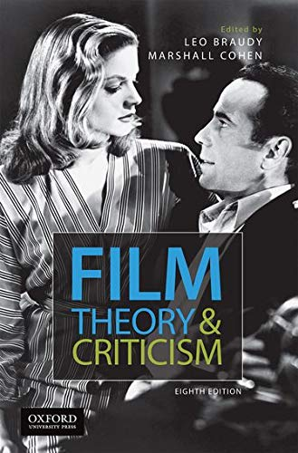
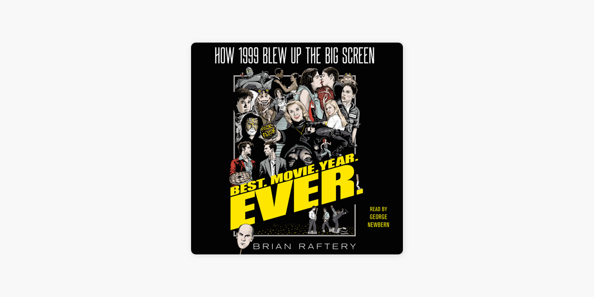

This list of resources includes various scholarly databases, books, and websites for researchers, students, and anybody who is interested in studying films or related subjects.
Performing arts periodicals database
The most recent and archival records are available in the Performing Arts Periodicals Database, which covers topics in the arts and entertainment such as dance, drama, theater, stagecraft, musical theater, circus performances, opera, storytelling, puppetry, magic, performance art, film, television, and more.
metacritic
Metacritic is a website where critics analyze movies, TV shows, music albums, video games, and other forms of entertainment. The website aims to support users in making well-informed selections about the time and cost they spend on entertainment.
Rotten Tomatoes
Through review aggregation, the website offers scores for a variety of movies and television shows. It also offers user recommendations, reviews, and entertainment guides.
IMBD
IMBD is an online database that offers details about movies, TV shows, trailers, actor and actress biographies, news, awards, and a variety of other related topics. The public has free access to the database.
such as dance, drama, theater, stagecraft, musical theater, circus performances, opera, storytelling, puppetry, magic, performance art, film, television,
and more.
The Age of Movies: Selected Writings of Pauline Kael by Pauline Kael
Pauline Kael, a film critic who regularly contributed to The New Yorker magazine, wrote this book. In it, she presented her insightful thoughts and opinions about movies. The book is a collection of analytical articles on numerous significant movies as well as excerpts from books she has written about movies.

Film Theory and Criticism: Introductory Readings by Leo Braudy
This book offers a comprehensive introduction to film theories and criticism. It is a collection of fundamental writings and theories that anyone interested in film studies would find useful.

Best. Movie. Year. Ever.: How 1999 Blew Up the Big Screen by Brian Raftery
This book offers the reader an insight into the making of movies as well as its own vision. It contains much more than a list of analysis of the films produced in 1999; it also includes director and actor interviews, as well as many details about the stories behind the scenes of film production.
Kanopy
A comprehensive collection of critical acclaim films, TV shows, documentaries, and other media is available to public and academic libraries through the internet streaming video platform Kanopy. Members of institutions who subscribe to the platform are eligible for free access.
American Film Institute
AFI is a nonprofit organization that supports artists and educates filmmakers while also honoring excellence in the filmmaking art.